Episode 117: ImaNewbie the Dragon Tamer - This week ImaNewbie decides to try learning a new skill he has never tried before - animal taming. As this episode opens we find ImaNewbie at the stables in Minoc receiving training from a helpful npc.
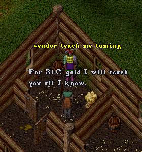
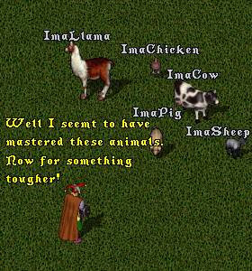
Having mastered taming barnyard animals,
and raising his taming skill all the way to
43, ImaNewbie decides that he is now
ready to tackle something a little bigger
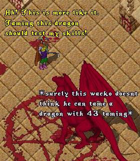
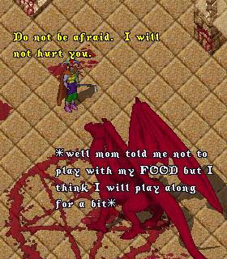
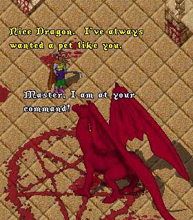
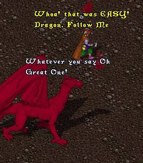
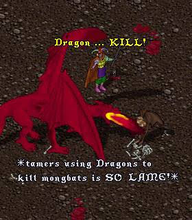
Well, having suffered the indignity of a
mighty dragon being asked to kill a lowly
mongbat, the dragon decides its time to
drop the charade and turn the tables.
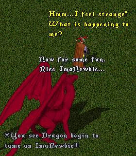
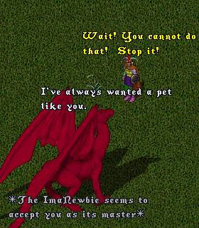
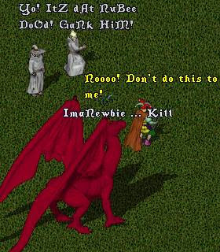
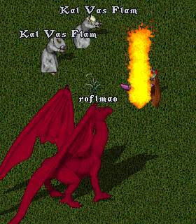
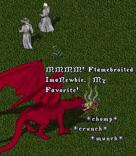